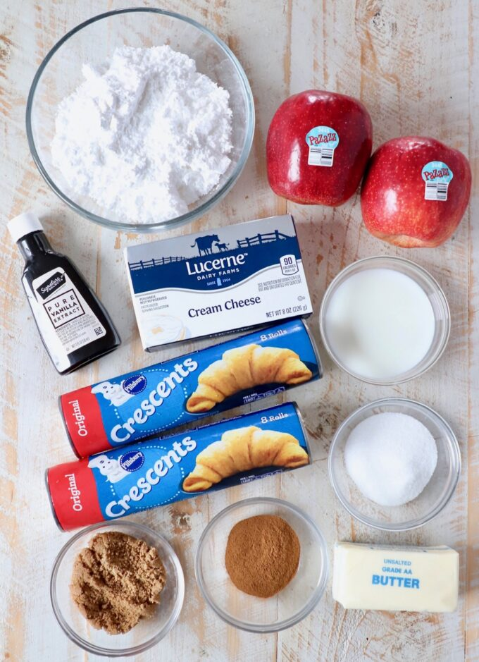

Cinnamon Roll Wreath with Apples


Ingredients you’ll need

| Ingredients | Quantity |
|---|---|
| Crescent roll dough | xx g. |
| Granulated sugar | xx g. |
| Brown sugar | xx g. |
| Ground cinnamon | xx g. |
| Unsalted butter | xx g. |
| Pazazz apples | xx g. |
| Cream cheese | xx g. |
| Milk | xx g. |
| Vanilla extract | xx g. |
| Powdered sugar | xx g. |
you can use canned crescent roll dough, or sheets of canned crescent dough. Either will work, the sheets of dough are simply a little easier to work with because you don’t need to press the crescent roll perforations together.
you’ll want the butter and cream cheese softened prior to making the recipe, so I recommend removing them from the refrigerator at least 30 minutes before starting the recipe, so they can come up to room temperature.
I purchased the apples at Vons in my area, click here to find out where you can buy these sweet, tart and extra crispy apples in your area!